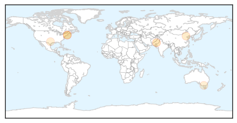

Cholera
30-Day Web Trend
1 alerts, 0 warnings

30-Day Twitter Trend
0 alerts, 0 warnings

Article Locations

Article Confidences

Top Articles:
Top Tweets:
- 0.577
- Scarlet Fever! Cholera! Gout! @Telegraph Victorian diseases have come back to haunt us http://t.co/2SshPbq920
Hepatitis
30-Day Web Trend
3 alerts, 0 warnings

30-Day Twitter Trend
0 alerts, 0 warnings

Article Locations
Article Confidences

Top Articles:
- 0.829
- Hepatits A & E spreading through drinking water
- 0.672
- Miriam Hospital physician advocates awareness, collaboration to combat peaking hep C virus
- 0.629
- Congratulations! Inoculations!
- 0.604
- Miriam Hospital physician advocates awareness, collaboration to combat peaking hep C virus
- 0.505
- WHO Welcomes Global Momentum on Viral Hepatitis
- 0.501
- Costly hepatitis C cure is dilemma for doctors
Top Tweets:
-
No tweets found for Jul 24, 2014